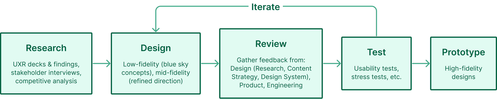
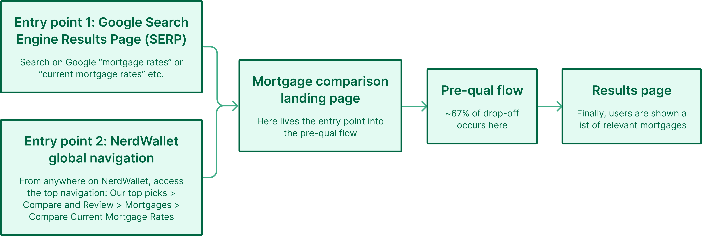
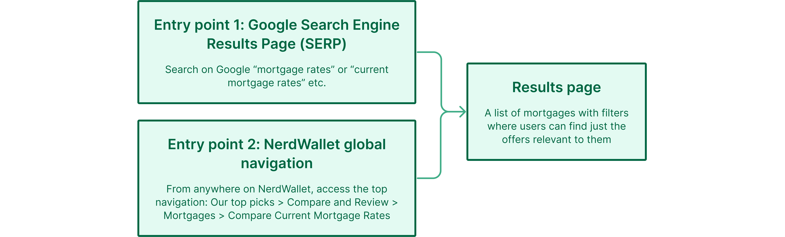
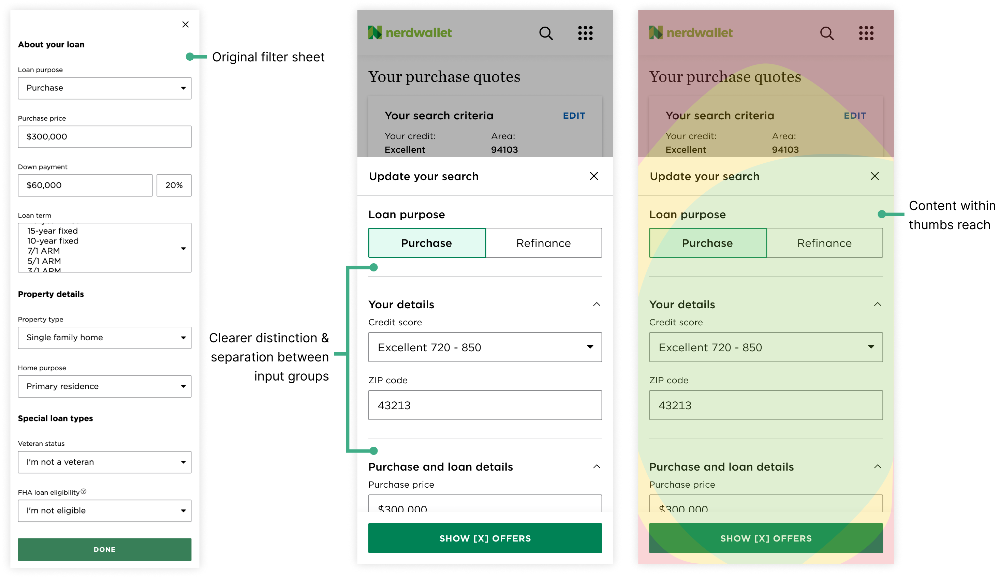
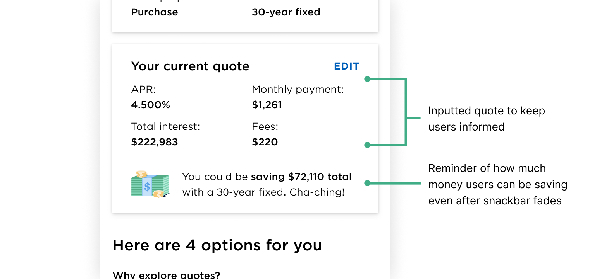

NerdWallet
Role: Product Designer
Timeline: 8 Weeks
Team: 1 Designer, 1 UX Researcher, 1 Content Strategist, 3 Engineers, 1 Product Manager
Context
NerdWallet is a fintech company with a mission to provide clarity for all of life’s financial decisions. A part of the product helps users compare offers (ie. credit cards, mortgages, loans, etc.) to find the best one for them. I worked specifically on the Mortgages Offer Comparison experience; where users can filter down all possible mortgages to just the ones that are relevant to them.
A tool to help users compare mortgages and find the best one for them
The Problem
The comparison tool is a key driver of SEO. However, the experience is outdated and therefore not fully meeting user needs. In the original experience, users go through a series of questions (also known as the pre-qual flow) about what they are looking for. Once these questions are answered, users are then shown a list of the most relevant offers.
Analytics show that there is a high abandonment rate (~67%) during the pre-qual flow where users drop off before ever arriving at the final page displaying the offers. Beyond that, there were also other various opportunities to improve user experience.
Additionally, during my internship, there was also an ongoing initiative: “transform with Currency''. Currency is NerdWallet’s design system that had recently been overhauled to increase accessibility and consistency. As a result, the typography, layout, and some components of old designs needed to be updated, including the mortgage comparison experience.
How might we redesign the current mortgage comparison experience to better meet user needs, reduce abandonment rate, and increase click-through rates?
The Process
The process that I followed was a highly collaborative one with stakeholders involved every step of the way. I would share and get feedback on my concepts and designs as early and frequently as possible.
The process for this project
Arriving at the Solution
Research Findings
The project kicked off with research, discovery, and competitive analysis. To get a better understanding of where the opportunities for improvement lied, we conducted stakeholder interviews and looked at the existing, holistic mortgage shopping experience and past user research decks.
Left: Stakeholder interview notes. Right: User research decks.
For market research, we looked at similar experiences in both fintech and ecommerce. While NerdWallet is a fintech company, a part of the experience involves shopping for a mortgage, making ecommerce a viable source of inspiration.

Competitive analysis
Finally, we synthesized all the information gathered and pulled out the key findings to come up with a few concrete steps to move forward with.
Key findings:
- The process of shopping for a home is a long one; users will come and go on NerdWallet throughout their journey
- Mortgage shoppers are always doing research and wanting to learn more
-
The ability to personalize generates value
- Users want results to be tailored to their situation and they often have more than one possible scenario that they’d like to explore
- Non-negotiable features that make for a good shopping experience are: filter, sort, and narrow
- Similar experiences for other verticals on NerdWallet that show offers immediately coming from Google’s search engine results page perform exceptionally well
- It’s important to consider business and SEO needs
The Solution
Three major areas of improvement were made, along with updating the designs per Currency guidelines:
Improved filtering capabilities, helping users navigate long form content, and improving the "beat my offer" feature
Improvement Breakdown & Decisions
Improved Filtering
Original Experience
When users google “mortgage rates”, they arrive at the landing page for the compare mortgage rates experience from Google’s search engine results page (SERP). Alternatively, they can get there from NerdWallet global navigation. There they can find the entry point to the pre-qual flow where they will be asked a series of questions regarding what they’re looking for. Users only have to go through the pre-qual flow once as their inputs are saved via cookies. Upon completion, users are shown a list of relevant mortgages along with filters that can be used to refine their results.
Original user flow
Redesigned Experience
Design Decision: Remove Redundancy
The filters on the results page adjust the exact same criteria as the questions asked in the pre-qual flow, making the pre-qual flow redundant. Given that there is a 67% abandonment rate that occurs during the pre-qual flow, we decided to remove the flow altogether and combine the contents of the mortgage comparison landing page (where the pre-qual entry point lived) with the final page displaying the offers. That way, users can immediately see mortgages as soon as they arrive.
New, improved user flow
Design Decision: Easy to Access
Given that the pre-qual flow was removed, we wanted to ensure that:
- Users don’t miss the filters
- Filters can be easily accessed
User research shows that users shopping for mortgages will use the filters frequently to “scenario plan”. Those filters are being used as a tool to shop for the best mortgage in any given, plausible situation.
On mobile, filters were made to be more prominent and to keep users informed of their search criteria. Compared to the original design where the access point to filters was small and easy to miss, the redesign leverages the card component to increase visibility and touch target.
Left: Old filter entry point. Right: New filter Entry Point.
Other general usability improvements were also made to filter on mobile. Input groups were more distinctly separated to improve accessibility and scannability while helping users find a specific input quicker. The filter drawer was reduced from full screen to two-third screen so that interactive content is within thumb’s reach (content is within the thumb zone).
Left: Original filter sheet. Middle: New filter sheet. Right: New filter sheet within context of the thumb zone.
On desktop and mobile, the filters will appear if the user scrolls up within the results table. In the original experience, users would have to scroll all the way back to the top of the table if they wanted to access the filters. With this redesign interaction, users can easily access the filters without it being too intrusive and taking screen real estate away from browsing through offers.
Easy to access filter — Desktop
This is especially useful on mobile where scrolling all the way back to the top of the offer table can be tedious if there are many offers.
Easy to access filter — Mobile
Design Decision: Feedback
A previously identified usability issue on desktop was that users weren’t sure if changing the inputs would change the offers displayed to them. To address that problem, a clear CTA to refresh the offers was added.
Left: Original inputs. Right: Redesigned inputs with a clear CTA.
Additionally, a brief loading screen is shown upon refresh (even if the offers have already been loaded) to reassure the user that offers are being selected based on their inputs.
Skeleton load
Past Iterations
A side rail filter on desktop was explored in early stages of the process. Market research in not just the fintech space but also the ecommerce space show filters in a side rail to be a popular pattern due to its ease of access.
Side rail filter exploration
However, upon discussion with cross-functional partners and stakeholders, we realized that it’s not a feasible concept for a number of reasons:
- NerdWallet’s design system team informed us that it’s not as accessible compared to having the filters at the top
- Engineering noted that it may not be the most responsive solution (when paired with the table of content feature) and the desired interaction may be tricky and beyond scope
Table of Content
Original Experience
NerdWallet pages tend to be very long and content rich. For the mortgage comparison experience, there’s a wealth of valuable and educational information below the offers table. User research shows that users typically don’t scroll down far enough to read information below the table on result pages, but that doesn’t mean that the information isn’t useful.
Redesigned Experience
To help users better navigate long form content and find useful information that will help them make the best financial decision for them, a table of content component was introduced.
Left: Table of content on mobile. Right: Table of content on desktop.
Design Decision: Page Overview & Landmark
One benefit of the table of content is that it gives users a high level overview of the page’s content. This will surface potentially useful information to the user that they may have otherwise missed if they didn’t know to scroll further down the page. It also helps users keep track of where they are on the page.
Active table of content on desktop
On mobile, the table of content is partially collapsed by default so that part of the page content is still visible within the viewport without making the table of content too unnoticeable.
Left: Mobile landing. Right: Expandable table of content.
Design Decision: Page Navigation
The table of content can also be used for on page navigation. For users who are looking for something in particular, they can use it to jump directly to a specific section. Users can easily get their questions answered by the information below the offer table and return to browsing through mortgages seamlessly.
Table of content interaction
Design Decision: Always Accessible
On desktop, the table of content is always present in the right rail so that users can access and use it at any time.
Sticky table of contents on desktop
While the table of content scrolls away on mobile (it would take up too much space otherwise), a “back to top” button appears when the user starts scrolling up anywhere within the page. That way, they can quickly and easily get back to the table of content.
Back to top on mobile
Past Iterations
Early table of content explorations included horizontal tabs rather than vertical ones. However, this option was quickly ruled out due to its similarity to an existing component.
Want to learn more about the work done around the table of contents? Stay tuned for more details or reach out!
Beat My Offer (BMX)
Original Experience
Within the pre-qual flow, users have the option to enter the details of an existing offer if they have one. Then, on the results page with all the offers, the offers are compared against the one that they currently have. Users will be shown all relevant offers and how much they either save or lose compared to their current quote. The entry point to the beat my offer (BMX) feature was disguised as a question and easy to miss.
Original BMX entry point
Furthermore, once on the results page, BMX cannot be accessed again since the answers inputted from the pre-qual flow are saved in cookies. Users cannot go back into the pre-qual flow once complete unless they clear their cookies.
Redesigned Experience
The BMX entry point was moved to the results page so that it’s always accessible and visible. User research shows that the mortgage shopping and home buying process is a long one so users return to NerdWallet throughout their journey. It’s likely that they may come back at a later time with an offer but are not able to access the BMX feature. By moving the entry point to always be present, users can then access it whenever they need to.
Redesigned BMX entry point
Design Decision: Large Touch Target
Using a card rather than just a button to contain the entry point increases the touch target so that users don’t miss it. User feedback showed that this feature is well liked so we want to make it easy to find. Additionally, a CTA to add a quote was included to increase affordances.
BMX touch target (on mobile)
Design Decision: Moment of Delight
The home buying process can be a tedious and stressful one so we wanted to ncorporate as many moments of delight as possible. If there are offers better than the one that the user currently has, we want to celebrate that! We worked with the brand studio team to create a short celebratory animation that rains confetti and money.
Moment of delight: celebratory moment
Accompanying the animation is a snackbar informing the user just how much money they can save.
Design Decision: Keep Users Informed
Keeping accessibility in mind, information regarding how much money the user can save is displayed within the BMX card even after the animation and snackbar has faded away along with the inputted quote to keep the user informed.

Informative and accessible filled BMX card
Past Iterations
We explored two card concepts for the BMX entry point on mWeb. Concept A has a clearer CTA but concept B takes up less vertical screen real estate. Ultimately, we opted for concept B to get users to the offers quicker. Additionally, by going with the shorter card, more of the results table will be visible within the viewport. Additionally, with concept A, there may be too many conflicting CTAs.
Left: Concept A. Right: Concept B.
In the first iteration of the moment of delight, the celebratory moment was displayed in a modal. During a design review, another designer raised the concern that the modal may be intrusive and inaccessible.
First iteration of BMX's celebratory moment
Jamming with another designer, we explored various other concepts before I finally arrived at design. The iterations leading up to the final design were either too intrusive or not delightful enough.
BMX celebratory moment explorations
The final animation paired along with the snackbar and note within the card strikes the right balance between delightful, non-intrusive, and accessible.
Other Concept Explorations
Saving Offers
User research shows that users aren’t always ready to commit to an offer and will return at a later time. To encourage users to come back to NerdWallet, being able to save offers will make it easier for them to find what they were previously looking at.
Saving specific offers exploration (mobile & desktop)
However, this introduced a lot of engineering complexity (ie. Where would offers be saved to? Do users have to be logged into a NerdWallet account? Cookies? etc.) so we did not move forward with it.
Flagging, Narrowing, and Organizing
Given that users are thinking of multiple scenarios, the concept of flagging offers can help users narrow down from many offers to a few. To take it one step further, users could even mark each offer with a different colour/tag to keep track of their decision making process.
Flagging and labelling offers exploration (mobile & desktop)
While the PM liked the idea, he was cautious of introducing a whole new feature during a redesign. Additionally, a feature like this would be out of scope for this project.
Conclusion
Impact
While this project hasn’t shipped yet, the work done has already had a visible impact. The research done around improving the mortgage comparison experience was transferable to other similar experiences in different verticals (ie. personal loans, credit cards, banking, etc). The emphasis placed on improving filter capabilities in this experience inspired the work on another team that was formed to redesign filters on NerdWallet. My PM liked some of the concepts so much that he brought them to the rest of the Product team to see how they can be incorporated into other parts of the product.
Additionally, the table of content component led to the second project of my internship that ultimately resulted in the creation and proposal of a new component to be introduced into Currency (NerdWallet’s design system). Want to learn more about it? Stay tuned for a separate case study!
Takeaways
Confidence & ownership
Through this internship, I realized how important it was to have the confidence to truly advocate for users. It’s scary to own an entire project and be the one at the table to speak up but over the course of the summer, I gained the confidence to defend my decisions. I learned how to think deeply about what we were doing and respectfully pushback or question decisions, using research and data to empower my rationale. This was the first time I truly felt the weight of the responsibility that designers have to our users and what it means to advocate for them.
Designing with constraints
Through past experiences, I’m familiar with designing within resource and technological constraints. However, this was the first time I had to balance various stakeholders and design within an existing product. These constraints came with some extra considerations as I couldn’t just do whatever was best for the user. I had to balance user needs with business n eeds and consider how my designs would affect and fit into the rest of the product.
Storytelling & communication
I picked up a lot of soft skills over this summer, such as how to present my work to stakeholders. Turns out that preparing your work for review and feedback takes more time and effort than I thought. I found myself setting aside time just to prepare for design reviews and really thinking it through as if it were a “formal” presentation. I realized how valuable good storytelling skills were and actively strived to strengthen those skills by sharing my work often and with different audiences. In doing so, I learned that a part of storytelling and communication is knowing your audience and tailoring your presentation accordingly.
Cross-functional collaboration
While this isn’t the first time I’ve worked in a cross-functional team, I still learned a lot from the engineers, PM, content strategist, and user researcher. Their input is invaluable in guiding and backing decisions. Through this project, I learned how to truly leverage each partner, when to loop in who, and how to turn feedback into productive discussions. While it may open a few rabbit holes that can slow down the velocity, I realized that sometimes, you just need to stop overthinking and bias towards action despite ambiguity and uncertainty.
Want to read more about my NerdWallet internship? Check out this blog post I wrote for NerdWallet’s Design blog!